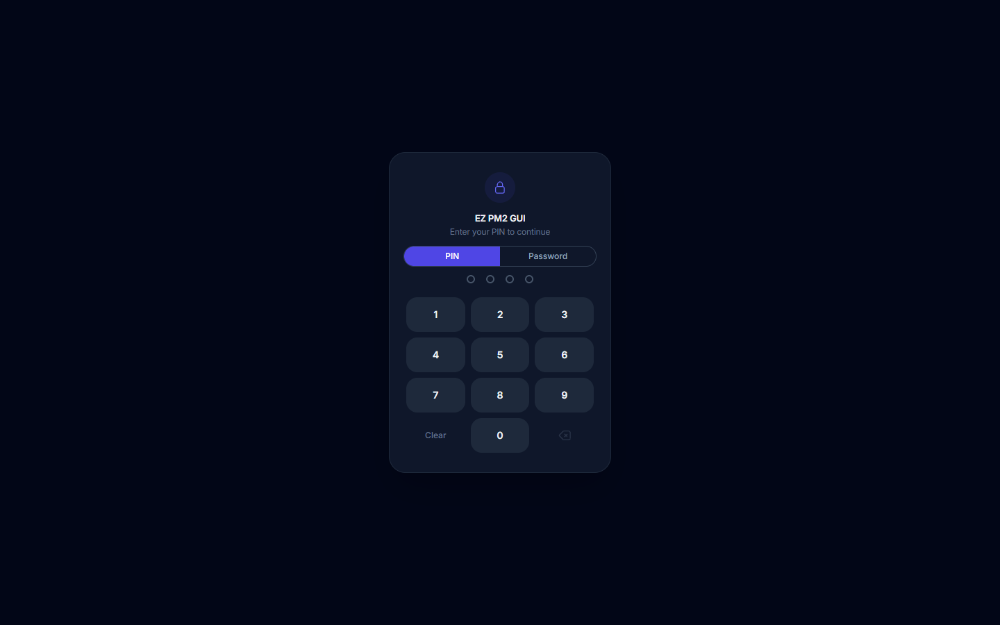
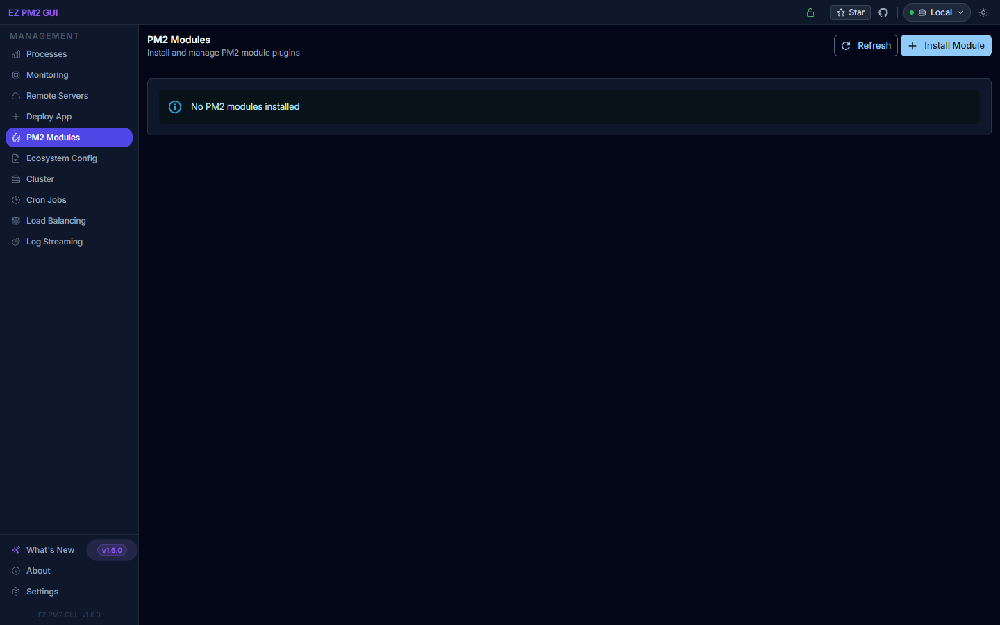
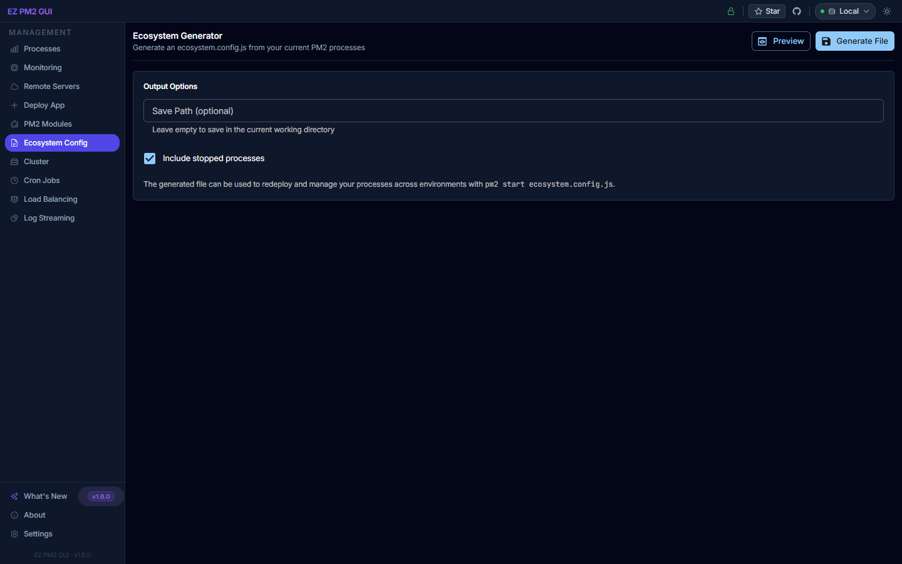
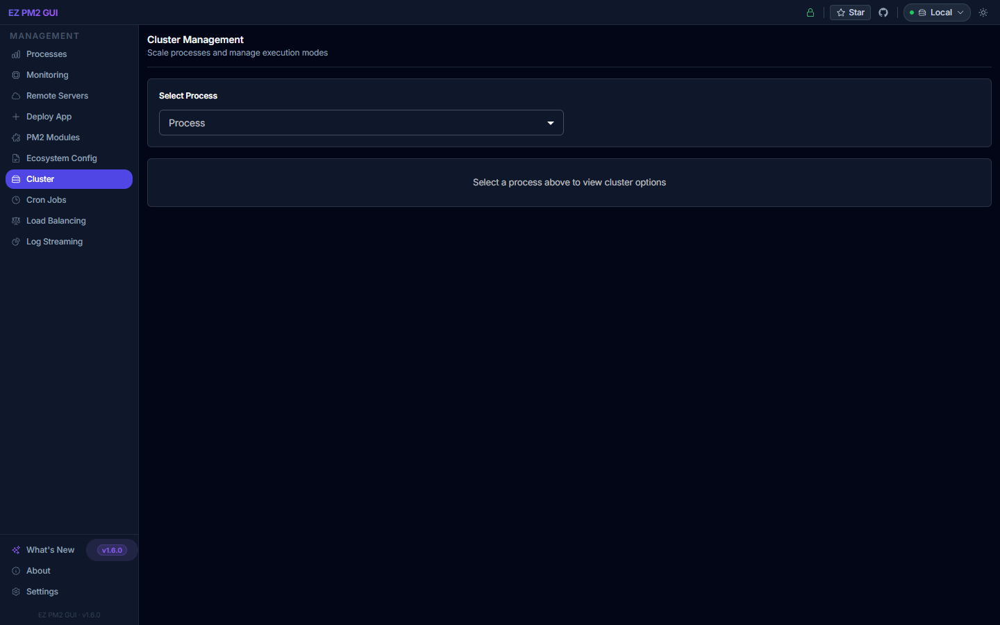
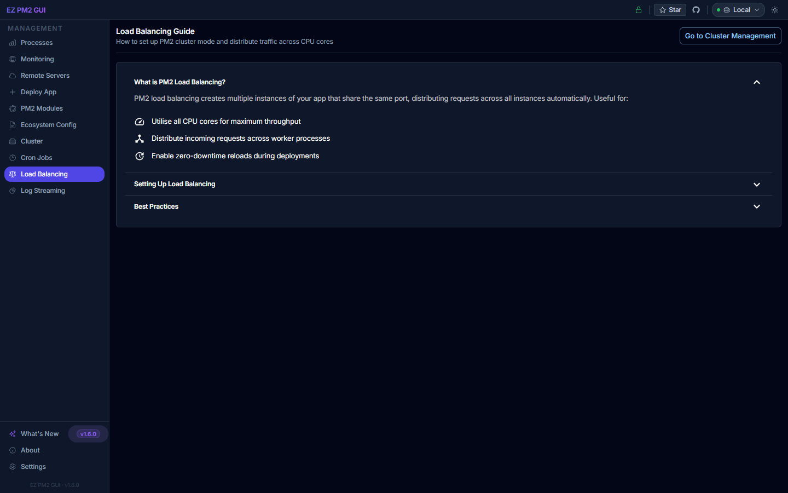
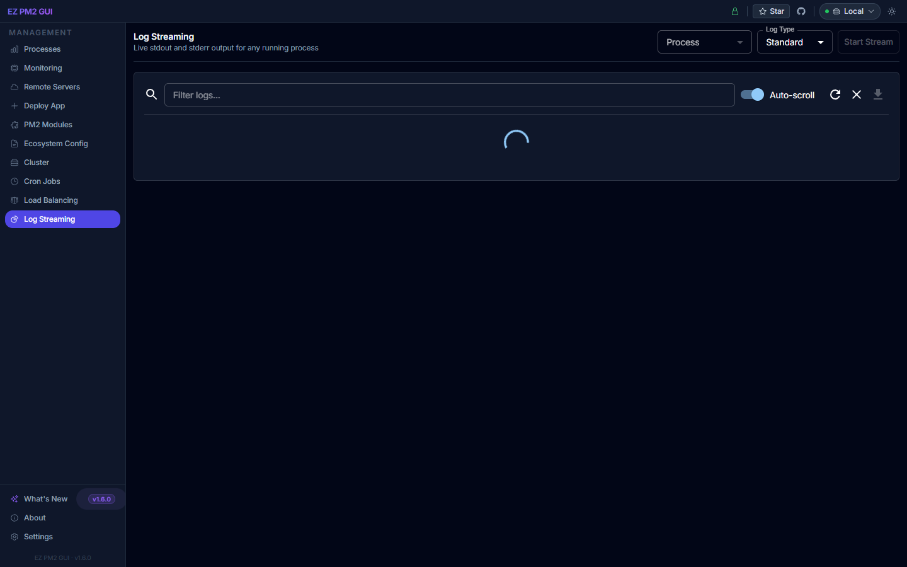

Getting Started
Installation
EZ PM2 GUI requires Node.js 18+ and PM2 installed globally. Install both with:
# Install PM2 globally (skip if already installed)
npm install -g pm2
# Install EZ PM2 GUI globally
npm install -g ezpm2guisudo if you get a permission error, or configure npm to use a user-writable directory.First Launch
Start the GUI server
Run ezpm2gui from any terminal. The server starts on port 3101 by default.
Open the dashboard
Navigate to http://localhost:3101 in your browser.
Unlock with your PIN or password
On first use, set a 4-digit PIN or password. Every subsequent launch starts at the lock screen below.
Lock Screen
When you open the dashboard, the lock screen appears first. Choose between a 4-digit PIN keypad or password entry — PIN auto-submits once all four digits are entered. The app auto-locks after an idle period (default 5 minutes — configurable in Settings → Security).

Processes (Dashboard)
The default landing page shows system health and every PM2 process at a glance.

Uptime
Host uptime since boot, formatted as days/hours/minutes.
Load Average
Classic 1 / 5 / 15-minute load averages from the OS.
Memory
Used vs. total host memory with a live progress bar.
CPU Cores
Detected logical CPU count — useful when sizing cluster mode.
- Search bar — filter processes by name or ID as you type.
- All Processes dropdown — narrow by status or namespace.
- Active / total counter — top-right summary of online vs. stopped.
- Each process card shows status, CPU %, memory, uptime, restarts, and action buttons.
Monitoring
Real-time CPU, memory, and uptime per process. All values update live via WebSocket — no manual refresh required.

- Total / Online — count of registered and running processes.
- CPU Peak — highest CPU-consuming process right now.
- Memory Peak — highest RSS with the process name labelled below.
- Sortable table — click any column header to sort by ID, Name, Status, CPU, Memory, Uptime, or Restarts.
- Refresh icon — force an immediate poll (top-right).
Remote Servers
Manage PM2 instances on other machines over SSH — no agent installation needed on the remote side, just PM2 and SSH access.

| Field | Notes |
|---|---|
| Name | Friendly label shown in the top-bar server switcher |
| Host | IP address or hostname of the remote server |
| Port | SSH port (default: 22) |
| Username | SSH user — must have PM2 access |
| Auth type | Password or private key (PEM format) |
PATH. Use the built-in Install PM2 button if detection fails.Deploy App
Start a new PM2-managed process from a structured form — no terminal needed.

Fill in Basic Info
Choose the app type (Node.js, Python, Bash, .NET…), name, namespace, entry file, and optional working directory.
Configure Runtime
Set instance count, exec mode (Fork / Cluster), memory cap and port. Toggle Auto Restart, Watch for Changes, or Auto Setup on Deploy as needed.
Add environment variables
Use the key / value inputs to add one variable at a time — press Add or Enter.
Click Deploy
The process starts under PM2 and appears immediately on the Processes page.
PM2 Modules
Install and manage official and community PM2 modules (equivalent to pm2 install <module>).

- Browse popular modules (
pm2-logrotate,pm2-server-monit,pm2-auto-pull, etc.). - Install / uninstall / enable / disable modules with a single click.
- Edit module configuration inline — changes apply without restarting PM2.
Ecosystem Config
Edit, preview and generate your ecosystem.config.js file from a structured editor.

- Visual editor for the
appsarray — add, remove and reorder entries. - Deploy section for staging and production targets (host, user, ref, post-deploy hooks).
- Export to disk, copy to clipboard, or generate a sample skeleton.
ezpm2gui-generate-ecosystem.Cluster
Scale a single app across multiple CPU cores with zero-downtime reloads.

- Pick an app, then slide the instance count up or down.
- Switch Exec Mode between Fork and Cluster.
- View per-instance CPU/memory breakdown for the selected app.
- Use Reload for rolling, zero-downtime restarts.
Cron Jobs
Schedule recurring tasks without editing crontab — jobs are stored and executed by the EZ PM2 GUI server.

Schedule
Standard 5-field cron expressions (seconds-precision supported).
Command types
Shell, Node.js, Python, and .NET executables.
Run log
Exit code, stdout and stderr saved per execution for review.
Load Balancing
Interactive guide to setting up load balancing with PM2's cluster mode, sticky sessions, and graceful reloads.

- Use the number of instances equal to your CPU core count for CPU-bound apps.
- Use more instances than cores for I/O-bound apps.
- Always use cluster mode for port-sharing between instances.
- Use Reload (not Restart) for zero-downtime deployments.
Log Streaming
Follow stdout and stderr in real time for any process.

- Select a process from the dropdown.
- Toggle between
stdoutandstderr. - Adjust the line buffer (50 / 200 / 500 / All) — default in Settings.
- Pause / resume the stream, filter by keyword, or download the full log file.
Settings
Application-wide preferences, auto-saved as you change them.

| Section | What you can change |
|---|---|
| General | Auto refresh toggle, refresh interval, log line count, timestamp display |
| Appearance | Light / dark mode, accent colour |
| PM2 | Daemon connection options |
| Advanced | Low-level flags for power users |
| Updates | Check for and install a newer ezpm2gui version from npm |
| Security | PIN, password, and auto-lock timeout |
Checking for Updates
Go to Settings → Updates and click Check for Updates. EZ PM2 GUI queries the npm registry and compares your installed version against the latest published release.
If an update is available, an Install button appears. Installation runs npm install -g ezpm2gui@latest and streams output live. After a successful install, click Restart Server to apply.
Theme
Click the / icon in the top navigation bar to toggle between dark and light mode. Your preference is saved and applied instantly across all pages.
FAQ
EZ PM2 GUI says "PM2 not connected" on startup
This usually means PM2 has no running processes. Start at least one process with pm2 start <app> and refresh the page.
Remote server shows "PM2 not found"
PM2 is installed in a non-standard PATH on the remote machine. EZ PM2 GUI tries several detection methods automatically. If all fail, use the Install PM2 button in the connection settings, or SSH in manually and run npm install -g pm2.
Can I run multiple instances of EZ PM2 GUI?
Yes — set a different port with the PORT environment variable: PORT=3102 ezpm2gui.
How do I run EZ PM2 GUI as a system service?
On Linux, copy ezpm2gui.service to /etc/systemd/system/, then run:
sudo systemctl daemon-reload
sudo systemctl enable --now ezpm2guiOn Windows, run install-windows-service.js with Node.js (requires administrator privileges).
Where are config files stored?
| File | Purpose |
|---|---|
src/server/config/remote-connections.json | Remote SSH connections (passwords AES-256 encrypted) |
src/server/config/project-configs.json | Deployment project definitions |
src/server/config/cron-jobs.json | Scheduled cron job definitions |
src/server/config/auth.json | PIN / password hashes and auto-lock settings |
src/server/logs/deployment.log | Deployment history log |